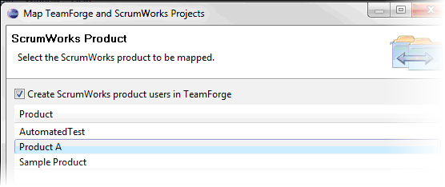
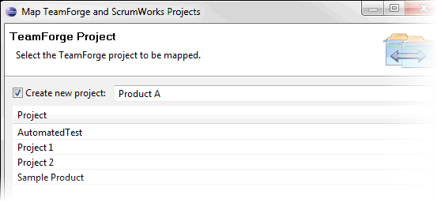
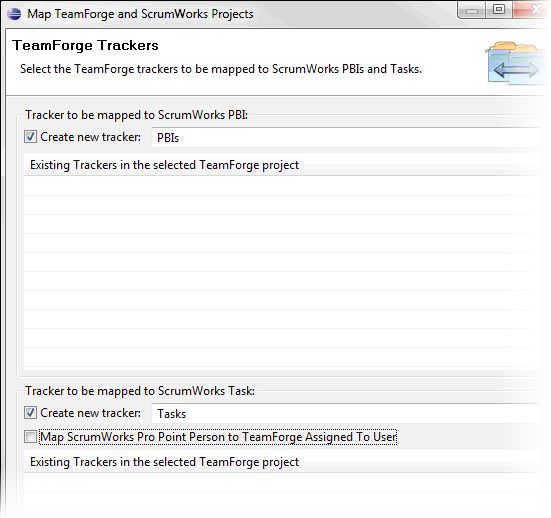
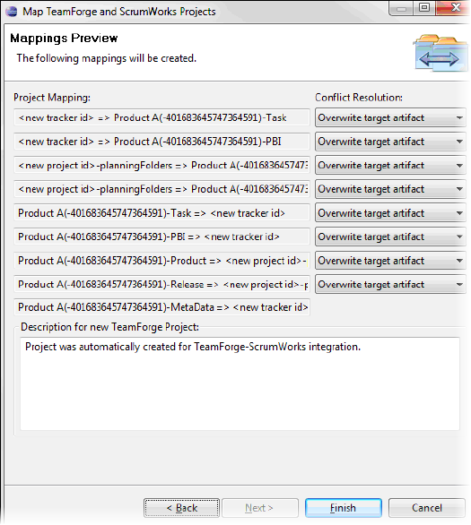

You configure a repository mapping to specify how the connector synchronizes
TeamForge with the other participant in the integration. For this connector, you map TeamForge projects with ScrumWorks Pro products.
As in previous releases of the CollabNet Connector Framework, ScrumWorks Pro
synchronizations use a fixed mapping schema that cannot be modified.
-
To add a repository mapping, right-click the ScrumWorks Pro connector site and
select Map projects.
The mapping wizard is launched. The wizard lets you select the ScrumWorks Pro
and TeamForge projects you want to synchronize and will setup the necessary
TeamForge trackers for you.
-
In the ScrumWorks Product screen, select the name of the ScrumWorks Product to be mapped. To add existing users of the selected ScrumWorks product to TeamForge, check the box for Create ScrumWorks product users in TeamForge. Click Next.

-
In the TeamForge Project screen, select the name of the TeamForge project to be mapped to the ScrumWorks product specified in the prior step. To create a new project, check the box for “Create new project”. Click Next.

-
In the TeamForge Trackers screen, select the TeamForge Trackers to be mapped to ScrumWorks Product Backlog Items and Tasks.
By default, ScrumWorks Product Backlog Items and Tasks map to Trackers using the same terms in TeamForge, but it is possible to overwrite these terms.
- We recommend that you leave the option Map ScrumWorks Pro
Point Person to TeamForge Assigned To User unchecked.
This will map the Point Person for Tasks in ScrumWorks Pro to the "Point
Person" text field in TeamForge. This is the safest setting for all but
the most expert users who have prepared their integrations to expressly
avoid the pitfalls described below.
- Because the "Point person" field in ScrumWorks uses only ScrumWorks system usernames, whereas the "Assigned To" field in TeamForge uses only TeamForge system usernames, this setting will only work if your TeamForge and ScrumWorks user accounts for the project/product in question are exactly the same, character-for-character.
CAUTION:
Select this option only if you are absolutely certain that all user accounts are identical between TeamForge and ScrumWorks, and moreover, that no artifacts being synchronized are assigned to users other than those whose account usernames are identical in both programs. Neglecting to ensure these conditions will result in inconsistent synchronization failures whose cause may be difficult to trace.
CAUTION:
If the ScrumWorks Product selected to be mapped in step 2 above was the "Sample Product", DO NOT select the checkbox here for Map ScrumWorks Pro Point Person to TeamForge Assigned To User. The Sample Product contains historical Tasks assigned to users that are no longer in the system, and their absence in TeamForge will result in the failed synchronization warned of above.
Click Next.

-
In the Mappings Preview screen, the project mappings are summarized and the conflict resolution method for each is displayed. The default conflict resolution settings are recommended -- -- however, you may individually select the conflict resolution method for each project mapping.

-
Click Finish.
The specified mappings appear in the CollabNet Sites view.